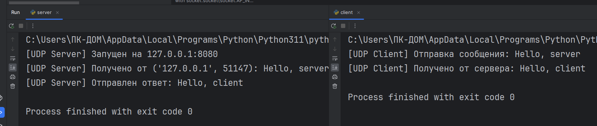
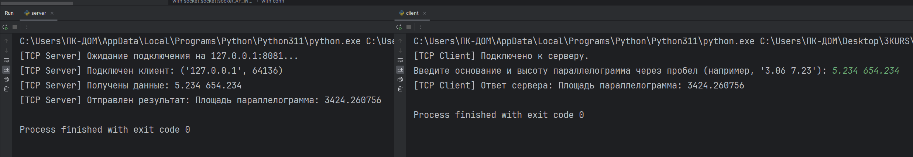
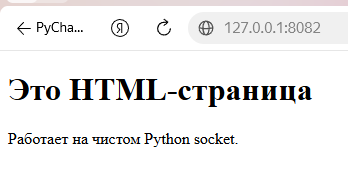
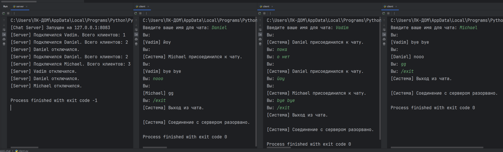
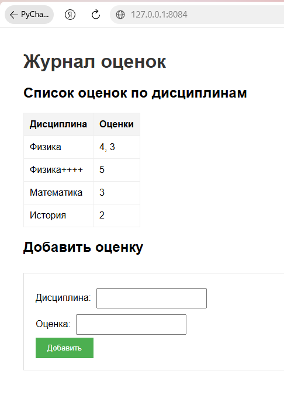
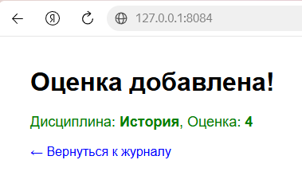
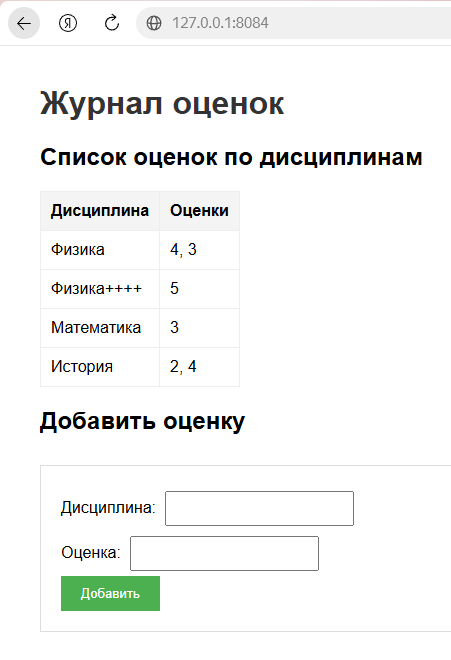

Лабораторная работа №1. Работа с сокетами
Студент: Лукис Вадим Вадимович
Группа: K3342
Вариант: 4 (Площадь параллелограмма)
Цель работы
Понять принципы межсокетного взаимодейсвтия в вебе. Научиться реализовывать базовую архитектуру клиент-сервер.
Задание 1. Обмен сообщениями по UDP
Описание
Реализован клиент и сервер на протоколе UDP. Клиент отправляет сообщение «Hello, server», сервер выводит его в консоль и отвечает «Hello, client».
Код сервера
import socket
HOST = '127.0.0.1'
PORT = 8080
with socket.socket(socket.AF_INET, socket.SOCK_DGRAM) as server_socket:
server_socket.bind((HOST, PORT))
print(f"[UDP Server] Запущен на {HOST}:{PORT}")
data, addr = server_socket.recvfrom(1024)
print(f"[UDP Server] Получено от {addr}: {data.decode('utf-8')}")
response = "Hello, client"
server_socket.sendto(response.encode('utf-8'), addr)
print(f"[UDP Server] Отправлен ответ: {response}")
Код клиента
import socket
HOST = '127.0.0.1'
PORT = 8080
with socket.socket(socket.AF_INET, socket.SOCK_DGRAM) as client_socket:
message = "Hello, server"
print(f"[UDP Client] Отправка сообщения: {message}")
client_socket.sendto(message.encode('utf-8'), (HOST, PORT))
data, addr = client_socket.recvfrom(1024)
print(f"[UDP Client] Получено от сервера: {data.decode('utf-8')}")
Результат работы

Задание 2. Вычисления через TCP
Описание
Реализован клиент и сервер на протоколе TCP. Сервер вычисляет площадь параллелограмма по формуле S = a * h, где a и h вводятся пользователем с клавиатуры на стороне клиента.
Код сервера
import socket
HOST = '127.0.0.1'
PORT = 8081
with socket.socket(socket.AF_INET, socket.SOCK_STREAM) as server_socket:
server_socket.bind((HOST, PORT))
server_socket.listen(1)
print(f"[TCP Server] Ожидание подключения на {HOST}:{PORT}...")
conn, addr = server_socket.accept()
with conn:
print(f"[TCP Server] Подключен клиент: {addr}")
data = conn.recv(1024).decode('utf-8')
print(f"[TCP Server] Получены данные: {data}")
try:
a, h = map(float, data.split())
area = a * h
result = f"Площадь параллелограмма: {area}"
except ValueError:
result = "Ошибка: введите два числа (основание и высоту) через пробел."
conn.sendall(result.encode('utf-8'))
print(f"[TCP Server] Отправлен результат: {result}")
Код клиента
import socket
HOST = '127.0.0.1'
PORT = 8081
with socket.socket(socket.AF_INET, socket.SOCK_STREAM) as client_socket:
client_socket.connect((HOST, PORT))
print("[TCP Client] Подключено к серверу.")
message = input("Введите основание и высоту параллелограмма через пробел (например, '3.06 7.23'): ")
client_socket.sendall(message.encode('utf-8'))
data = client_socket.recv(1024).decode('utf-8')
print(f"[TCP Client] Ответ сервера: {data}")
Результат работы

Задание 3. Раздача HTML-страницы по HTTP
Описание
Реализован HTTP-сервер на чистых сокетах. При подключении клиента сервер читает файл index.html и отдаёт его, формируя корректный HTTP-ответ со строкой статуса, заголовками и телом.
Код сервера
import socket
import os
HOST = '127.0.0.1'
PORT = 8082
BASE_DIR = os.path.dirname(os.path.abspath(__file__))
HTML_FILE = os.path.join(BASE_DIR, 'index.html')
with socket.socket(socket.AF_INET, socket.SOCK_STREAM) as server_socket:
server_socket.setsockopt(socket.SOL_SOCKET, socket.SO_REUSEADDR, 1)
server_socket.bind((HOST, PORT))
server_socket.listen(1)
print(f"[HTTP Server] Запущен на http://{HOST}:{PORT}")
while True:
conn, addr = server_socket.accept()
with conn:
print(f"[HTTP Server] Подключение от {addr}")
request = conn.recv(1024).decode('utf-8')
print(f"[HTTP Server] Запрос:\n{request}")
try:
with open(HTML_FILE, 'r', encoding='utf-8') as f:
body = f.read()
response_headers = (
"HTTP/1.1 200 OK\r\n"
"Content-Type: text/html; charset=utf-8\r\n"
f"Content-Length: {len(body.encode('utf-8'))}\r\n"
"Connection: close\r\n"
"\r\n"
)
conn.sendall(response_headers.encode('utf-8') + body.encode('utf-8'))
print("[HTTP Server] Файл успешно отправлен.")
except FileNotFoundError:
error_body = "<h1>404 Not Found</h1>"
response = f"HTTP/1.1 404 Not Found\r\nContent-Length: {len(error_body)}\r\n\r\n{error_body}"
conn.sendall(response.encode('utf-8'))
Результат работы

Задание 4. Многопользовательский чат
Описание
Реализован многопользовательский чат на протоколе TCP с использованием библиотеки threading. Сервер хранит список подключённых клиентов и рассылает сообщения всем, кроме отправителя. Клиент использует два потока: один для отправки, другой для приёма.
Код сервера
import socket
import threading
HOST = '127.0.0.1'
PORT = 8083
clients = []
usernames = {}
def broadcast(message, sender_socket):
"""Рассылает сообщение всем клиентам, кроме отправителя."""
for client in clients:
if client != sender_socket:
try:
client.send(message)
except:
client.close()
remove_client(client)
def remove_client(client_socket):
"""Удаляет клиента из списков."""
if client_socket in clients:
clients.remove(client_socket)
username = usernames.get(client_socket, "Неизвестный")
del usernames[client_socket]
print(f"[Server] {username} отключился.")
def handle_client(client_socket):
"""Обрабатывает сообщения от конкретного клиента."""
try:
username = client_socket.recv(1024).decode('utf-8')
usernames[client_socket] = username
clients.append(client_socket)
print(f"[Server] Подключился {username}. Всего клиентов: {len(clients)}")
broadcast(f"[Система] {username} присоединился к чату.".encode('utf-8'), client_socket)
while True:
message = client_socket.recv(1024)
if not message:
break
full_message = f"[{username}] {message.decode('utf-8')}".encode('utf-8')
broadcast(full_message, client_socket)
except ConnectionResetError:
pass
finally:
remove_client(client_socket)
client_socket.close()
with socket.socket(socket.AF_INET, socket.SOCK_STREAM) as server_socket:
server_socket.setsockopt(socket.SOL_SOCKET, socket.SO_REUSEADDR, 1)
server_socket.bind((HOST, PORT))
server_socket.listen()
print(f"[Chat Server] Запущен на {HOST}:{PORT}")
while True:
client_socket, addr = server_socket.accept()
thread = threading.Thread(target=handle_client, args=(client_socket,))
thread.start()
Код клиента
import socket
import threading
HOST = '127.0.0.1'
PORT = 8083
def receive_messages(client_socket):
"""Поток для постоянного получения сообщений от сервера."""
while True:
try:
message = client_socket.recv(1024).decode('utf-8')
if not message:
break
print("\n" + message)
print("Вы: ", end="", flush=True)
except:
print("\n[Система] Соединение с сервером разорвано.")
client_socket.close()
break
username = input("Введите ваше имя для чата: ")
with socket.socket(socket.AF_INET, socket.SOCK_STREAM) as client_socket:
client_socket.connect((HOST, PORT))
client_socket.send(username.encode('utf-8'))
receive_thread = threading.Thread(target=receive_messages, args=(client_socket,))
receive_thread.start()
while True:
message = input("Вы: ")
if message.lower() == '/exit':
print("[Система] Выход из чата.")
break
client_socket.send(message.encode('utf-8'))
client_socket.close()
Результат работы

Задание 5. Простой веб-сервер (GET/POST)
Описание
Написан веб-сервер, обрабатывающий GET и POST запросы.
- GET: отдаёт HTML-страницу с таблицей оценок и формой.
- POST: принимает данные формы (дисциплина и оценка), сохраняет их в словарь (с группировкой по предметам) и в файл grades.json.
HTML-шаблоны вынесены в отдельные файлы для разделения логики и представления.
Код сервера
import socket
import json
import os
from urllib.parse import unquote
HOST = '127.0.0.1'
PORT = 8084
BASE_DIR = os.path.dirname(os.path.abspath(__file__))
GRADES_FILE = os.path.join(BASE_DIR, 'grades.json')
GRADES_HTML = os.path.join(BASE_DIR, 'grades.html')
SUCCESS_HTML = os.path.join(BASE_DIR, 'success.html')
grades = {}
def load_grades():
"""
Загружает оценки из файла grades.json при запуске сервера.
"""
global grades
if os.path.exists(GRADES_FILE):
try:
with open(GRADES_FILE, 'r', encoding='utf-8') as f:
grades = json.load(f)
print(f"[Server] Загружено оценок из файла: {len(grades)} дисциплин")
except Exception as e:
print(f"[Server] Ошибка чтения файла: {e}")
grades = {}
else:
print("[Server] Файл grades.json не найден, начинаем с пустым журналом")
def save_grades():
"""
Сохраняет текущие оценки в файл grades.json.
Вызывается после каждого добавления новой оценки.
"""
try:
with open(GRADES_FILE, 'w', encoding='utf-8') as f:
json.dump(grades, f, ensure_ascii=False, indent=2)
print(f"[Server] Оценки сохранены в файл")
except Exception as e:
print(f"[Server] Ошибка сохранения: {e}")
def read_template(filepath):
"""
Читает HTML-файл и возвращает его содержимое как строку.
"""
try:
with open(filepath, 'r', encoding='utf-8') as f:
return f.read()
except FileNotFoundError:
return f"<h1>Ошибка: шаблон {filepath} не найден</h1>"
def generate_grades_html():
"""
Генерирует основную страницу журнала оценок.
Читает шаблон grades.html и подставляет в него таблицу с оценками.
"""
template = read_template(GRADES_HTML)
if grades:
table_html = "<table border='1' cellpadding='5' cellspacing='0'>\n"
table_html += "<tr><th>Дисциплина</th><th>Оценки</th></tr>\n"
for subject, marks in grades.items():
table_html += f"<tr><td>{subject}</td><td>{', '.join(marks)}</td></tr>\n"
table_html += "</table>"
else:
table_html = "<p>Пока нет оценок.</p>"
final_html = template.replace('{{GRADES_TABLE}}', table_html)
return final_html
def generate_success_html(subject, grade):
"""
Генерирует страницу подтверждения после добавления оценки.
Читает шаблон success.html и подставляет в него название дисциплины и оценку.
"""
template = read_template(SUCCESS_HTML)
final_html = template.replace('{{SUBJECT}}', subject)
final_html = final_html.replace('{{GRADE}}', grade)
return final_html
def parse_request(request_data):
"""
Разбирает HTTP-запрос на составные части.
возвращаем: метод (POST), путь (/), тело (subject=Физика&grade=4)
"""
headers, _, body = request_data.partition('\r\n\r\n')
first_line = headers.split('\r\n')[0]
parts = first_line.split(' ')
method = parts[0]
path = parts[1]
return method, path, body
def parse_post_body(body):
"""
Разбирает тело POST-запроса.
Превращает тело (например: subject=Физика&grade=4)
в словарь (например: {"subject": "Физика", "grade": "4"})
"""
params = {}
for param in body.split('&'):
key, value = param.split('=', 1)
params[key] = unquote(value)
return params
def send_response(conn, status_code, status_text, content_type, body):
"""
Формирует и отправляет HTTP-ответ.
"""
body_bytes = body.encode('utf-8')
headers = (
f"HTTP/1.1 {status_code} {status_text}\r\n"
f"Content-Type: {content_type}\r\n"
f"Content-Length: {len(body_bytes)}\r\n"
"Connection: close\r\n"
"\r\n"
)
conn.sendall(headers.encode('utf-8') + body_bytes)
def handle_client(conn):
"""
Обрабатывает один HTTP-запрос от клиента.
"""
try:
request_data = conn.recv(4096).decode('utf-8')
if not request_data:
return
method, path, body = parse_request(request_data)
print(f"[Server] Получен запрос: {method} {path}")
if method == 'GET':
html = generate_grades_html()
send_response(conn, 200, 'OK', 'text/html; charset=utf-8', html)
print(f"[Server] Отдана страница журнала")
elif method == 'POST':
params = parse_post_body(body)
subject = params.get('subject', 'Неизвестно')
grade = params.get('grade', 'Неизвестно')
if subject not in grades:
grades[subject] = []
grades[subject].append(grade)
save_grades()
print(f"[Server] Добавлена оценка: {subject} - {grade}")
html = generate_success_html(subject, grade)
send_response(conn, 200, 'OK', 'text/html; charset=utf-8', html)
print(f"[Server] Отдана страница подтверждения")
else:
error_html = "<h1>405 Method Not Allowed</h1><p>Поддерживаются только GET и POST</p>"
send_response(conn, 405, 'Method Not Allowed', 'text/html; charset=utf-8', error_html)
print(f"[Server] Неизвестный метод: {method}")
except Exception as e:
print(f"[Server] Ошибка обработки запроса: {e}")
finally:
conn.close()
print(f"[Server] Соединение закрыто")
load_grades()
with socket.socket(socket.AF_INET, socket.SOCK_STREAM) as server_socket:
server_socket.setsockopt(socket.SOL_SOCKET, socket.SO_REUSEADDR, 1)
server_socket.bind((HOST, PORT))
server_socket.listen(5)
print(f"[Web Server] Сервер запущен на http://{HOST}:{PORT}")
while True:
conn, addr = server_socket.accept()
print(f"[Server] Новое подключение от {addr}")
handle_client(conn)
Структура данных
Оценки хранятся в словаре, где ключ - название предмета, а значение - список оценок:
{
"Физика": [
"4",
"3"
],
"Физика++++": [
"5"
],
"Математика": [
"3"
],
"История": [
"2"
]
}
Результат работы



Вывод
В ходе лабораторной работы были изучены принципы работы сетевых сокетов в Python. Реализованы клиент-серверные приложения на базе UDP и TCP, написан собственный HTTP-сервер для отдачи статических страниц и обработки форм, а также создан многопользовательский чат с использованием многопоточности.